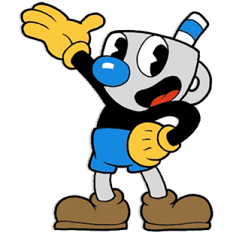
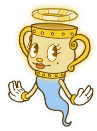

Cuphead — компьютерная игра в жанре run and gun и платформера, разработанная и изданная канадской командой разработчиков StudioMDHR Entertainment. Анонс игры состоялся в 2013 году, а выход для персональных компьютеров и Xbox One состоялся 29 сентября 2017 года. Управляя персонажем по имени Чашек, игрок сражается с серией боссов, чтобы вернуть долг дьяволу. Игра была сильно вдохновлена работами аниматоров 1930-х годов, таких как Fleischer Studios Макса Флейшера, и стремилась сохранить их сюрреалистические качества. Cuphead была выпущена на платформе Nintendo Switch 18 апреля 2019 года, а на PlayStation 4 игра была выпущена 28 июля 2020 года
Персонаж игрока, Чашек, проиграл в споре с дьяволом и пытается вернуть долг. Игра имеет вид разветвляющейся последовательности уровней. У Чашека бесконечное число попыток, и он не теряет оружие после смерти. У главного героя игры есть способность парирования различных объектов, закодированных розовым цветом. Успешные парирования заполняют специальный счётчик, который позволяет ему выполнять специальную способность. Уровни доступны через внешний мир в стиле action RPG, который имеет собственные секретные пути. В игре есть кооперативный режим, в котором в сражениях с боссами может участвовать ещё один игрок, управляя вторым персонажем по имени Кружек (Mugman, «Человек-Кружка»).
| Персонаж | Внешний вид | Характеристика |
|---|---|---|
| Чашик | Капхед — небольшая антропоморфная чашка с маленькими красными шортами, изогнутой трубочкой с красно-белой полоской, большими глазами в форме полумесяца и небольшим красным носиком. Он также носит коричневые башмаки и пару белых перчаток. Его стиль внешности напоминает анимацию мультфильмов 1930-х годов, как и было задумано для игры. Показано, что Капхед является более уверенным и слегка нахальным по сравнению с братом. Часто рискует и является тем, кто постоянно втягивает себя и брата в неприятности. Его образ, вероятно, был вдохновлен протагонистами 1930-х годов в ранних мультфильмах, где они являются «очаровательными, но проблемными типами». | |
| Кружик |  | Магмен — играбельный персонаж и дейтерагонист игры Cuphead. Им управляет второй игрок, и он может присоединиться или выйти из игры в любое время. В версии 1.2 им может управлять и первый игрок.Магмен внешне очень похож на Капхеда, у него голубые штаны, короткая перечная трубка, и большой нос. По сравнению с братом его глаза круглые/овальные и поменьше, а также его форма головы немного отличается. Показано, что Магмен является более осторожным и слегка неуверенным по сравнению с братом. Не любит то, что брат часто втягивает его и себя в неприятности. |
| Легендарная чаша |  | Легендарная Чаша — это персонаж, который заточён в урну, находящуюся в склепе в Мавзолеях. Её нужно защищать от враждебных духов с помощью парирования. При успешном прохождении уровня, Легендарная Чаша высвобождается и даёт модификатор суперспособностей.Представляет из себя большую золотистую чашу с двумя ручками по бокам, передняя часть которой имеет лицо, состоящее из двух глаз с ресницами, круглого приплюснутого носа, небольших красных губ и чёрной родинки. Над головой имеет сложенную золотистого цвета трубочку в виде нимба, схожую с трубками Капхеда и Магмена, когда те проигрывают и оборачиваются призраками. От нижней части чаши также отходит голубоватое туловище, парящее над землёй и имеющее две руки, на которые надеты белые перчатки с жёлтыми кольцами. В облике Мисс Чалис она похожа на Капхеда и Магмена и тоже носит чёрную футболку с белыми перчатками, но при этом у неё светло-жёлтые ноги и белая юбка. Также после превращения была убрана помада на губах, родинка стала чуть заметнее, глаза стали чёрными, руки чаши стали менее закрученными, а сверху у неё пропали ряд из кружочков и нимб над ними. |